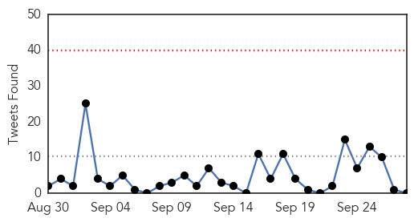
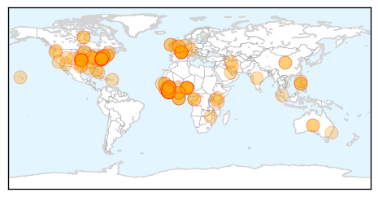
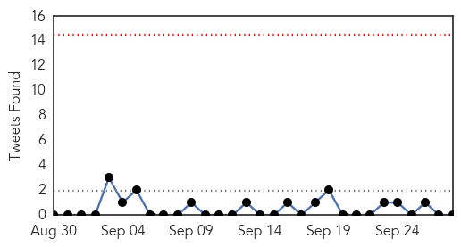
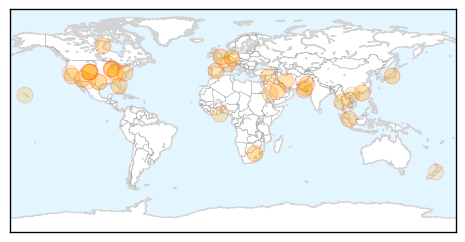

Ebola
30-Day Web Trend
0 alerts, 0 warnings

30-Day Twitter Trend
0 alerts, 0 warnings

Article Locations
Article Confidences
Top Articles:
- 1.000
- Leaving Ebola fighters behind to die
- 1.000
- Pittsburgh Post-Gazette
- 1.000
- Chief medical officer in Liberia enters Ebola quarantine
- 1.000
- Liberia's chief medical officer under quarantine
- 1.000
- Editorial: Tragedy of Ebola hits home in Hampshire County
- 1.000
- Chief medical officer in Liberia enters Ebola quarantine
- 1.000
- Liberia's chief medical officer under Ebola quarantine
- 1.000
- Chief medical officer in Liberia enters Ebola quarantine
- 1.000
- Ebola Virus Outbreak: Cuba Sends More Medical Professionals to West Africa
- 1.000
- UMCOR, UMC Health Boards Respond to Ebola - Liberia
- 1.000
- 12 Terrifying Numbers That Show Just How Bad The Ebola Crisis Is
- 1.000
- Russian scientists develop, test experimental Ebola vaccine
- 1.000
- Are we safe from the Ebola disease? – The Express Tribune Blog
- 1.000
- Liberia's top doctor in quarantine after assistant dies of Ebola
- 0.999
- Article: Imperialism and the Ebola catastrophe
- 0.999
- EU states 'can do more' to battle Ebola virus
- 0.999
- Grand Rapids Herald-Review: Columnists
- 0.999
- Ebola clinics fill up as death toll hits 3,000
- 0.999
- Fighting Ebola means sweating in protective suit
- 0.999
- Ebola clinics fill up as Liberia awaits aid
- 0.999
- Ebola-exposed patient arrives at Maryland clinic
- 0.999
- Chilling report a call to action on Ebola
- 0.999
- Liberia awaits aid as clinics fill up
- 0.999
- HIV drug could help save some stricken with Ebola
- 0.999
- Health care system in collapse as Ebola death toll passes 3,000
- 0.999
- Ebola clinics fill up as Liberia awaits aid
- 0.999
- Ebola clinics fill up as Liberia awaits aid
- 0.998
- Promised Ebola Aid Falls Short of Needs in Liberia
- 0.998
- Liberia's Top Doctor Places Herself in Ebola Quarantine
- 0.998
- The problem with “Ebola”: The troubling, xenophobic language of disease
- 0.998
- Promised Ebola Aid Falls Short of Needs in Liberia
- 0.998
- Experimental Ebola vaccines ready in coming months as deaths pass 3,000
- 0.998
- Promised Ebola Aid Falls Short of Needs in Liberia
- 0.998
- Promised Ebola Aid Falls Short of Needs in Liberia
- 0.997
- Exposed Ebola Patient Arrives In U.S.
- 0.997
- FIU doctor says education key to stopping Ebola
- 0.997
- Ebola clinics fill up as Liberia awaits aid
- 0.997
- US doctor exposed to Ebola will be treated at Maryland hospital
- 0.997
- Sudan Vision Daily
- 0.996
- Ebola Affected Countries Gets Additional Cuban Doctors And Nurses
- 0.996
- Liberia's chief medical officer goes under Ebola quarantine
- 0.996
- Doctor Exposed to Ebola Virus Arrives at NIH
- 0.996
- SOS Medical Centre loses co-worker to Ebola - Liberia
- 0.994
- Liberian medical officer in Ebola quarantine
- 0.993
- Phl urged to send volunteers to Africa to contain Ebola
- 0.993
- Editorial: More must be done to stop spread of Ebola
- 0.993
- WORLD TRIBUNE PAKISTAN IMF unblocks cash as desperate west Africa awaits Ebola aid
- 0.992
- Ebola aid corridor opens as death toll exceeds 3k
- 0.992
- Liberians set to be deported to Ebola-stricken homeland get to stay
- 0.992
- Maryland hospital to care for U.S. doctor exposed to Ebola in West Africa
Showing top 50 articles...
Top Tweets:
-
No tweets found for Sep 28, 2014
Unknown
30-Day Web Trend
0 alerts, 0 warnings

30-Day Twitter Trend
0 alerts, 0 warnings

Article Locations
Article Confidences

Top Articles:
- 0.990
- Virus probed in Colo. paralysis cases
- 0.989
- Virus probed in paralysis cases in 9 Colorado kids
- 0.947
- Virus probed in paralysis cases in 9 Colorado kids
- 0.917
- Chicago Tribune
- 0.917
- Chicago Tribune
- 0.917
- Chicago Tribune
- 0.917
- Chicago Tribune
- 0.917
- Chicago Tribune
- 0.917
- Chicago Tribune
- 0.917
- Chicago Tribune
- 0.917
- Chicago Tribune
- 0.917
- Chicago Tribune
- 0.917
- Chicago Tribune
- 0.917
- Chicago Tribune
- 0.917
- Chicago Tribune
- 0.910
- The world windows to Thailand
- 0.884
- ‘Vaccination is the only way out of a slow and painful death’
- 0.866
- Nusra Front says U.S.-led air strikes in Syria will fail
- 0.866
- Russia's Lavrov says ties with Washington need new "reset"
- 0.866
- Spanish architect Inaki Alonso install a solar panel on a beam over his central Madrid roof terrace
- 0.866
- File photo of a home with solar panels on its roof seen in a residential neighborhood in San Marcos
- 0.866
- German test pilot Scherdel steers the solar-powered Solar Impulse 2 aircraft during a training flight in Payerne
- 0.815
- UAE Haj pilgrims: Dubai health 'check' - Emirates 24
- 0.801
- Five babies test positive for TB in El Paso
- 0.783
- Summit County Animal Control urges pet vaccinations to prevent rabies
- 0.741
- ¿Qué pasa, Cincinnati? School board member has seen Hispanic culture take root in the Tri-State
- 0.729
- Texas Nurse Assistant Exposes Hundreds of Infants to Tuberculosis in a Year
- 0.702
- ECOWAS Health Ministers Issue Communique On Combating Ebola
- 0.701
- Clinical Review: Hyperthyroidism
- 0.688
- Awareness: Seminar held on World Rabies Day
- 0.632
- Texas A&M researcher develops new test to detect tuberculosis in minutes
- 0.613
- 5 babies test positive for TB after Texas nursery exposure
- 0.608
- 5 babies test positive for TB in Texas exposure
- 0.597
- Rand Water says restoration wil be gradual
- 0.596
- SGGP English Edition- HCMC has no report of surge of pinkeye patients
- 0.550
- Water restoration will be gradual says Rand Water
- 0.522
- 5 babies test positive for TB in Texas exposure
- 0.520
- “CVD made me vigilant to my health”
- 0.518
- Upper Boddington villagers told tap water now safe
Top Tweets:
- 0.598
- Garrafa de 10 kilos puede costar solo G. 12.000 en el país: En la actualidad es un “sacrilegio” pagar G. 90.00... http://t.co/3ZkoqSXdq3